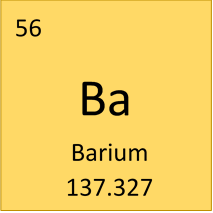
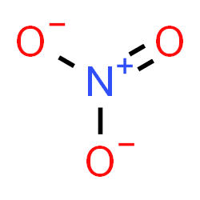

Brandon Tang, Claire Jung, Natalie Wang, Sai Earla
Introduction
The Environmental Working Group (EWG) tracks 14 different contaminants found in the water
supply in nearly every ZIP code across the US.
They claim that the legal limits for many contaminants set by the United States Environmental Protection
Agency (EPA) are too high for safe water.
Using data from EWG’s contaminants database and census.gov, we present a visual narrative that explores the
relationship between water quality
and the socio-economic and racial divisions across Maryland’s zip codes.
Analyzing and visualizing water quality data, particularly in the context of income-based demographics and
other socio-economic factors, is
important to bring transparency into the realm of environmental health and help create a deeper
understanding of the relationship between health
and socio-economic factors.
Why We Chose Maryland
We chose Maryland as the main focus of this website for several reasons. First, Maryland is our
current home
and we want to contribute meaningfully to the well-being of our state’s residents. Additionally, Maryland’s
diverse socio-economic landscape (cities, suburbs, rural areas) provides a robust dataset to explore.
Our goal with this website is to inform decision-making processes and start action towards sustainable water
practices for all communities here in Maryland.
EPA Guidelines vs EWG Guidelines
The EPA and EWG are two organizations that set guidelines for environmental health standards.
The EPA, a federal agency, sets national regulatory guidelines for pollutants and contaminants in air, land, and water.
EWG often advocates for stricter guidelines than the EPA's set limits in order to
reduce potential health risks. They also advocate for higher levels of scrutiny of outdated
legislation and harmful agricultural practices. Our website aims to further examine equitable access to
clean water in
Maryland.
Analyzing Maryland's Water Data
Some Important Contaminants
We have chosen to focus our attention on 4 contaminants: Nitrate, Barium, Atrazine and Bromodichloromethane.
These contaminants were chosen based on their prevalence and potential impact on public health. Click on
each one to learn about its effect in water.
Atrazine is a widely used herbicide in agriculture, particularly for crops like sugar canes, corn, and
other industrial crops. When it rains, atrazine can leach into streams, rivers, and groundwater. This
herbicide is known for its potential endocrine-disrupting effects and has been linked to reproductive
and developmental issues in humans and wildlife. Some studies also suggest a possible connection to
certain cancers. The EPA has set the maximum contaminant level
for atrazine in drinking water at 3 parts per billion (ppb), but groups like the Environmental Working
Group (EWG) argue for stricter limits due to its potential health risks.
Bromodichloromethane is often formed as a byproduct of when chlorine is used to treat drinking water.
The EPA currently has no guidelines regarding amounts of bromodichloromethane in water; however, the EWG
recommends a guideline of 0.06 ppb due to health concerns related to cancer, harm to reproduction and
child development, and changes to fetal growth and development. The EWG guideline is based on a 2018
guideline proposed by the California Office of Environmental Health Hazard Assessment.
Bromodichloromethane in tap water above this guideline has been detected by EWG in 48 states and being
served to 237 million people.

Barium contamination in water typically occurs through natural processes. Surface runoff and
groundwater seepage can lead to barium dissolving in the water, especially when the water flows past or seeps
through rocks containing barium. The solubility and toxicity of barium in water depend on the types of
barium compounds in the rocks and the water's alkalinity; for example, barium chloride is more
water-soluble and more dangerous than barium carbonate. Additionally, barium can enter water sources
from anthropogenic activities like oil and natural gas drilling, as well as from coal waste, high-octane
fuels, landfill leachate, and some de-icing products, although industrial pollution is less common
than natural release from rocks.
Given the health risks associated with barium, particularly to the kidneys and cardiovascular
system, the EWG has set a health benchmark of 0.7 parts per million (ppm) for
barium in drinking water, much lower than the federal legal limit of 2 ppm. This recommendation is
based on research by the Agency for Toxic Substances and Disease Registry and the California Office of
Environmental Health Hazard Assessment, including a tenfold safety margin for children's health

Nitrate is an ion that is a component of plant fertilizer used by farms and people with lawns. It ends
up in water streams because of runoff, which ends up affecting the water supplies of mainly agricultural areas.
The earliest known effects of high nitrate content in water included methemoglobinemia, also known as blue
baby syndrome, and the legal allowable limit for nitrate was set at 10 ppm in 1962 accordingly. However,
since that date, researchers in epidemiology suggest this number to still be far too high for safe
water. Nitrate is linked to higher risk of numerous cancers in multiple studies, as well as subclinical
hyperthyroidism in women. Nitrate’s cousin nitrite is another contaminant, albeit an even more toxic
one. For the EWG, the safe limit of nitrate content sits at around 0.14 ppm, which is 140 times lower
than the legal limit.
Analyzing Maryland's Water Data
The visualization below shows median income by total population, with each dot representing a ZIP code, and
colored by the majority race in each area (according to census.gov). It offers several interesting insights
into the socio-economic and demographic landscape.
Note: click on any entry in the legend on the right to remove those entries from the graph.
Key Takeaways
First, the data suggests a weak correlation between higher incomes and lower populations.
For example, if we look at the cluster of dots on the right end of the graph,
we can see that the top 5 ZIP codes with highest median household income all contain less than 10,000 people.
Additionally, we can see that all higher-income ZIP codes are predominately white. This
racial correlation may hint at socio-economic disparities that exist and raise questions about equity/access
to resources. Furthermore, there seems to be a concentration of majority Hispanic ZIP codes (green dots)
around the same levels of median household income.
Analyzing Maryland's Water Data
Water Contamination Graphs
Below will be several graphs pertaining to water contamination data with respect to median income or
population and
classified by ZIP code.
Note: ZIP codes can be serviced by multiple water providers. The major service provider in a
ZIP code is the one that services the highest population of people.
Click on each dropdown to view the graph.
Note: click on any entry in the legend on the right to remove those entries from the graph.
Note: click on any entry in the legend on the right to remove those entries from the graph.
Note: click on any entry in the legend on the right to remove those entries from the graph.
Note: click on any entry in the legend on the right to remove those entries from the graph.
Key Takeaways
Here we have representations of contamination data across four distinct graphs to provide a comprehensive view of
the relationship between income levels and water quality in various ZIP codes. We chose to look at the majority
provider for each zip code, and the mean and median number of contaminants by providers. For example, in ZIP
code 21211, 1.6 million people are served by the City of Baltimore, 575 by
Keswick Multi-Care Center, 200 by
Apostolic Towers, and 162 by the Neighborhoods at St. Elizabeth. So for 21211, the
majority graph would only show the contaminants detected in City of Baltimore utilities.
In the majority provider graph, which focuses only on the utility covering the majority of a ZIP
code, a trend emerges - ZIP codes with higher median household incomes tend to experience fewer contaminants, with
the highest number detected in ZIP codes with a median household income between $50,000 - $150,000. Looking at
the mean and median graphs, a similar, but more subtle pattern emerges, indicating the highest level of contaminants in a
similar income bracket.
We also see ZIP codes with median household incomes between $200-250k have water providers with the
least amount of contaminants. These graphs bring up questions around the correlation between socio-economic factors
and water quality, and indicating a need for improvement in these areas.
Correlation Heatmap:
Below is a table containing the correlations between the figures on the left with the variables on top.
Key Takeaways
In terms of median household income, we can see the variables with the highest positive correlations are
percent non-Hispanic Asian, median age, and percent non-Hispanic white. This suggests areas with higher
median household incomes tend to have a higher percentage of non-Hispanic Asian residents, older median age,
and larger non-Hispanic white populations. Conversely, there is a negative correlation between percent
non-Hispanic black and percent non-Hispanic American Indian.
In the context of median age, the largest positive correlations were between percent non-Hispanic
white and
median household income, suggesting areas with older populations and with larger non-Hispanic white
residents tend to have higher median household incomes. On the other hand, we see a negative association
between median age and percent Hispanic, total population, and percent non-Hispanic black.
For contaminants in the majority providers, we see a strongest positive correlation with percent
non-Hispanic white and total population. We see the strongest negative correlations with percent
non-Hispanic Asian and median household income. Interestingly, for mean and median number of contaminants,
we see different patterns where the strongest positive correlations are with total population and percent
non-Hispanic Asian and the strongest negative correlations are with median age, percent non-Hispanic
American Indian, and percent non-Hispanic black.
This heatmap provides insights into the relationship between demographic factors and water quality
variables. The positive correlations between median household income and factors such as non-Hispanic Asian,
median age, and percent non-Hispanic white indicate more complex socio-economic factors. Additionally,
negative correlations with percent non-Hispanic black suggests disparities that should have closer
examination. We also see associations between age demographics, income levels, and racial compositions as
well as how these relate to various water quality variables. In the future, it would also be interesting to
look into additional water quality variables such as ph levels, presence of heavy metals, bacterial
contaminations, residual chlorine, etc.